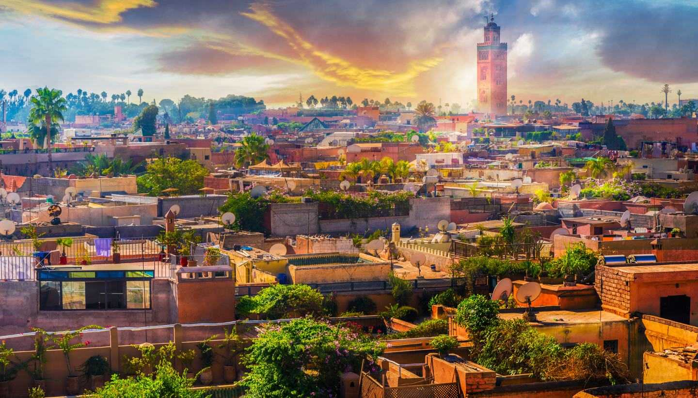
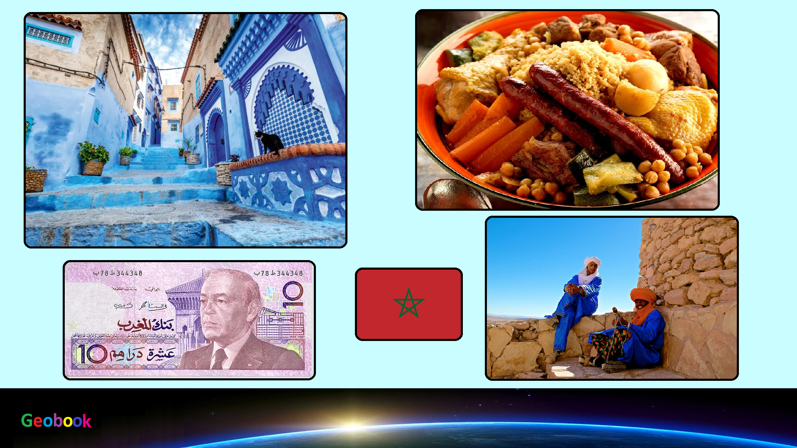

×

Morocco
Происхождение названия
Страна официально называется араб. المملكة المغربية аль-Мамля́кату ль-Магриби́яту, буквально — «королевство Магрибия», кроме того, в стране бытуют самоназвания араб. المغرب الأقصى, Эль-Магриб-эль-Акса — «дальний Запад», и араб. مراكش — Маррáкиш, название от ойконима города, который в средние века был одной из её столиц. В Европе в конце XIX века получила распространение французская форма названия страны Maroc, использовавшаяся в различных вариантах написания: Morocco, Marok, Marokko и т. д. Исключением является Испания — по-испански страна называется исп. Marruecos.
История
Люди населяли территорию Марокко с раннего палеолита.
В первом тысячелетии до нашей эры марокканские земли принадлежали Карфагену.
В 682 году началось арабское завоевание Северной Африки.
В ходе Испано-марокканской войны 1859—1860 годов Королевство Испания заняло часть земель султаната.
В конце XIX века Марокко (управляемое с 1894 года Мулай Абд аль-Азизом) стало объектом соперничества Испании, Франции, Британии, а в XX веке — также и Германии.
После трёхлетнего периода массовых выступлений в ряде местностей страны, перешедших в повстанческое антифранцузское выступление, и политического кризиса, вызванного попытками смены короля, в марте 1956 года Франция признала независимость Марокко, а в апреле независимость получило и Испанское Марокко, хотя несколько городов осталось за испанцами.
Правительство и политика
На данный момент действующий президент страны — Мухаммед VI (с 23 июля 1999 года).
Данные: Дата рождения 21 августа 1963. Место рождения Рабат, Марокко. Супруга Лалла Сальма. Дети
Мулай Хасан,
Лалла Хадиджа.
На данный момент действующий премьер-министр страны - Османи, Саадеддин (с 17 марта 2017).
Данные: Дата рождения 16 января 1956. Место рождения Инезган, Сус — Масса, Марокко.
Праздники
| Дата | Праздник | Примечание |
|---|
| 1 января | европейский Новый год | Начало календарного года |
| 11 января | День независимости | День независимости |
| 1 мая | День рабочего | В честь всех рабочих |
| 23 мая | Национальный праздник | Национальный праздник |
| 9 июля | Праздник молодежи. | Праздник молодежи. |
| 30 июля | День трона | День трона |
| 20 августа | День революции | День революции |
| 18 ноября | День независимости | День независимости |
____
